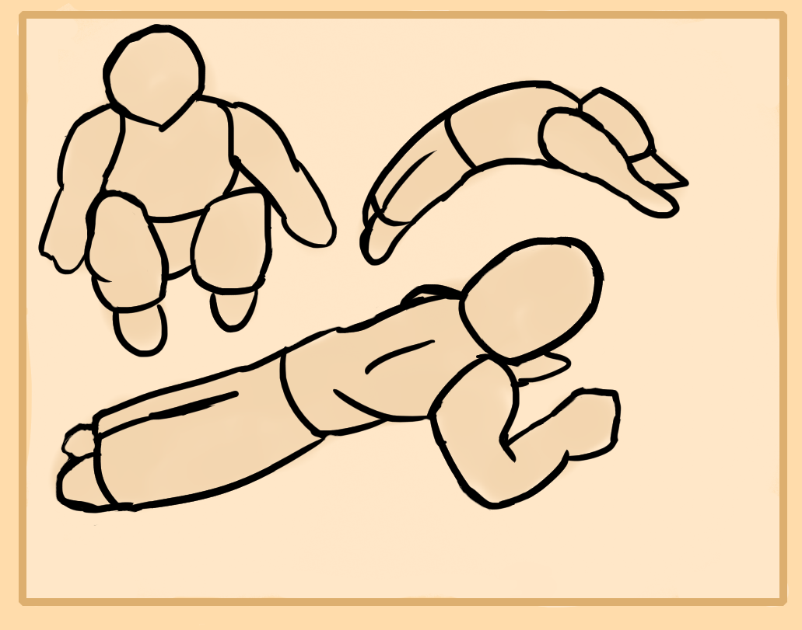
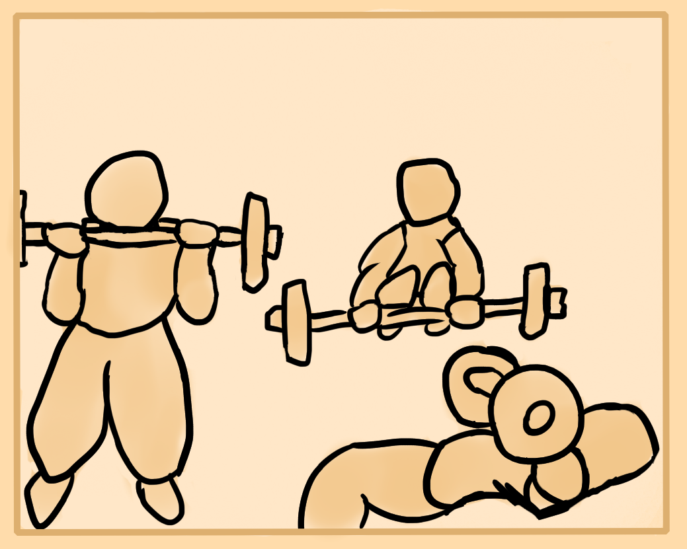
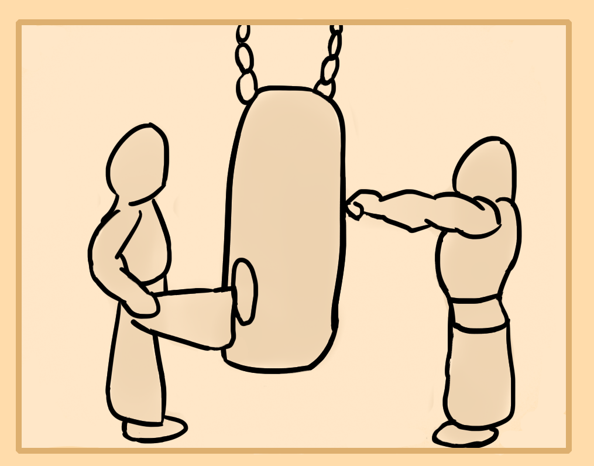
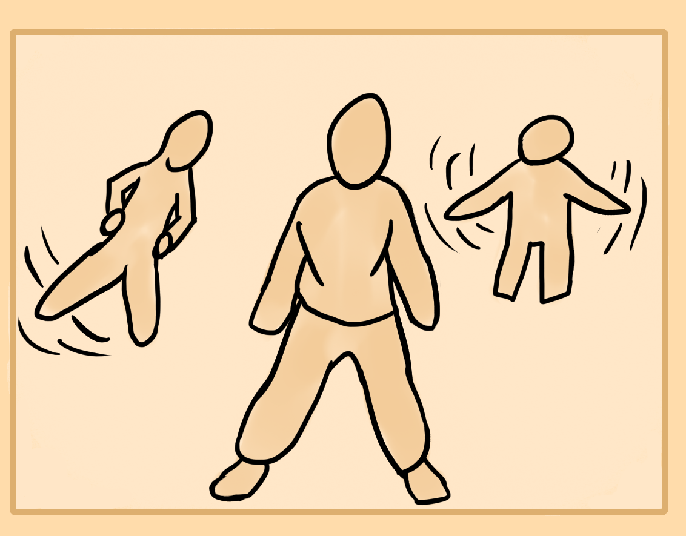
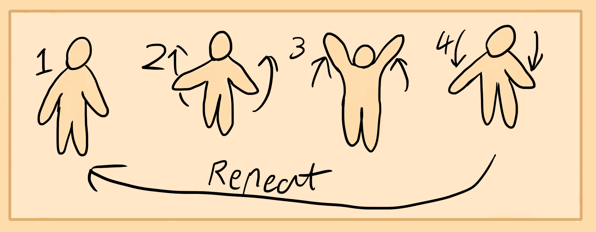
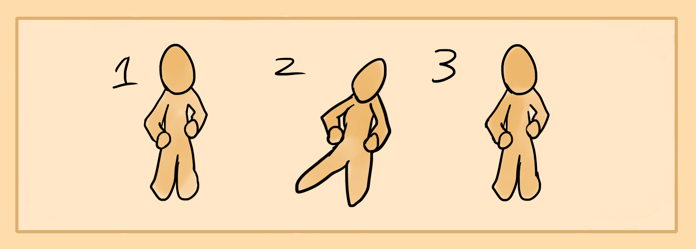

Your physical body is the carrier of energy. A weak body will usually always mean weak energy while a strong body means strong energy. If your body is weak you can't control and manipulate internal energies well. Hence this chapter is dedicated to physical exercise.
There are two main parts of the body, the yin parts and yang parts. Yin parts are the bottom half of the body, front side and right side. Yang is the upper part, back and left side. Though for simplicity we can just break it down into upper body(Chest, arms, shoulders) and lower(lower back, glutes, lower abbs, legs). You want to achieve a balance of these parts, though the lower body is more important for woman while the upper body is more important for men as both areas create their corresponding energy force.
There are four main types of training. First is body weight or calisthenics where you perform exercises like running, pushups, squats, situps, etc. Next is weight lifting or weight exercises which use dumbells and barbells usually. Benchpress, weighted squat and deadlifts are an example. After that comes yang or hard martial arts exercises. These include basic punches, kicks, stepping exercises, and sparring. Sports as well fit here. Lastly there is soft martial arts like that of taiji and qigong. Here you either do standing isometrics or soft movement exercises.
I recommend trying out each and finding which you like the most. Usually some of them go hand in hand like a martial art or sport and weight lifting.
I'll outline some basic exercises of each that you can continuously repeat several times a week to gain a basic physique which usually takes anywhere from a year if gifted to 5 and even 10 years if you have medical issues.
I recommend training 2-3 times a week for 20-30 minutes. Make sure to rest and eat well as it's very important.
Basic Calisthenics
I recommend checking out progression charts of the exercises listed as it's good to start out on the most basic.
Pushups - These are good for the arms and upper body. They should be your main upper body exercise.
Pullups - Do multiple variations like neutral grip and chinups. Buy some gymnast rings or a door pullup device. This deveops your ability to pull.
Situps - These work the lower abs quite well. I personally like to do them on a blowup balance ball.
Squats - Good to work more on the glutes and thighs. This is your main leg exercise.
Calf Raises - Helps to develop foot stability and the lower leg limb.
Lunges - Good for knee training. Squat alternative.
Bridges - Great for strengthening the back and bladder meridian.
Basic Weight training
Similar to calisthenics, start out with low weight and high repetition to slowly build up your form and stamina. Then you can add more weight.
Benchpress - Your bread and butter upper body lift. Great for the heart meridian muscle line.
Overhead Press - Good for shoulders.
Dumbell Curls - Pumps up your arms and upper body.
Rows - Builds up your lat muscles.
Deadlift - Use light weight to build up the form. Great for lower back, core and legs if done well.
Front/Back squats - Weighted variant of squats. Bladder meridian
Basic Martial Arts
For this one you may want to use a punching bag or tree roped at punch level.
Basic Punches - This is an exercise to develop your ability to punch. It is not a functional punch like boxing training but more of a physical body exercise that uses punching. Stand arm length away from your tree or punching bag and widen the legs to shoulder distance. Slightly sit down into the posture like a subtle horse stance. Hold the arms up above the belly and below the nipples, palms up in a fist position. Strike with your right arm, thrusting it forward, slightly turning the upper body while using the legs to ground your force and keep the body stable. Strike with the left arm, slightly twisting the body and drawing back your right hand to its original position.
Perform 100 of these to start with, then perform another 100 when you get used to it. You will notice how much this enhances your regular and natural punches as well as upper body.
Basic Kicks - This exercise is similar to the previous one on punches. Take your subtle horse stance and either hold your arms and fists up like in a fighting stance or keep them relaxed to your sides. Face the punching bag/tree. Be in leg distance of it. Strike with your right leg. Lift up the thigh and then project the lower leg limb forward so that you kick. So lift then kick and try to strike either with the whole flat of your foot or sometimes its easier to think of using the heel. But this is not a heel kick, that's just a mental helper.
The hips should be mostly straight and stable. Though a little bit of flexibility can be employed.
Regain the right leg to its original posture and continue with the left. Do 100 of these and increase it when you feel competent.
This helps to train the legs and enhance your natural kicks.
Basic Soft Martial Arts
Soft martial arts is good for older people, sick, physically weak folk and those who want to take a more relaxed aproach to training.
Standing Practice - Standing is a great way to exercise believe it or not. The idea is to open up your inner channels and to have good but relaxed posture. I recommend standing in a slight horse stance where the legs are separated about shoulder length or more and you sit down a little bit. Keep your hands to the side and open up the lat area or the side of the chest a little so that the arms don't droop or fall onto the body.
Practice this for 5-10 minutes and then add 5 minutes time each week.
Arm Raises - This is an exercise which does not seem like it'd do much, similar to standing, but really can help a lot. Begin by standing in a upright neutral, relaxed posture. Raise the arms slowly while keeping them mostly straight without locking the joints. Raise them so that the tips of your fingers point up. While you raise, twist the hands inward so that your palms face each other when they're up in the air. Then lower the arms to your side almost like you're trying to fly and twist the hands again so that the palms face each other/the body when they're downwards.
Side Leg Raises - These are excellent for the hips. To perform them, stand up straight with a relaxed posture. Place your hands on the pelvis if you need extra support. Raise up your right leg and bend your body towards the left slightly to add a little bit of counter balance. Slowly lower the leg down and resume your neutral posture. Do 10 on the right side then 10 on the left. Add 10 more on each side each week or month to build up more strength.
